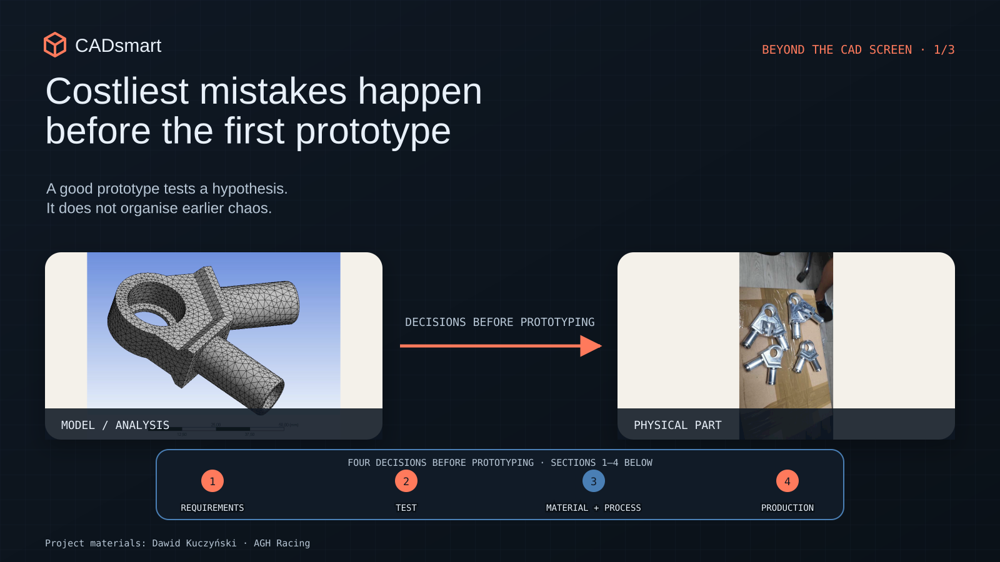
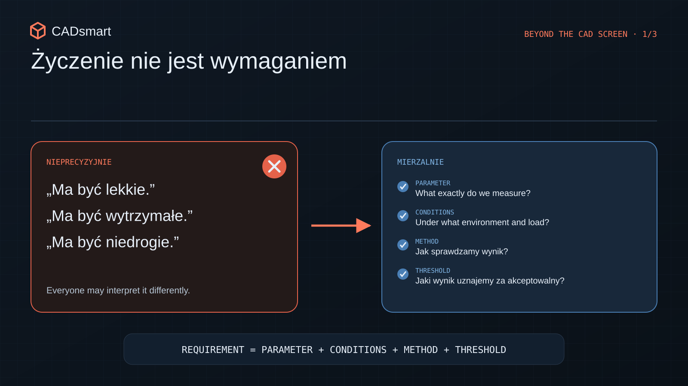
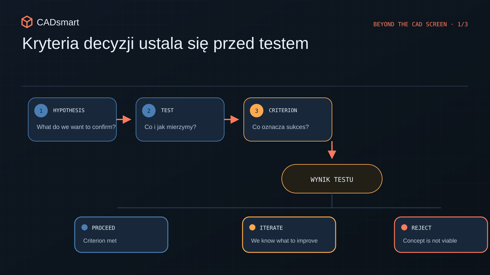
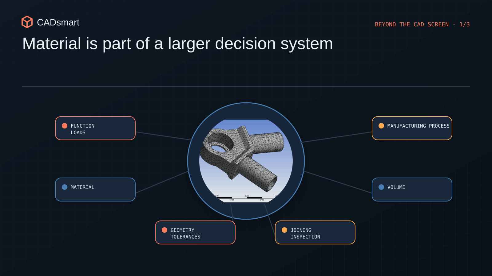
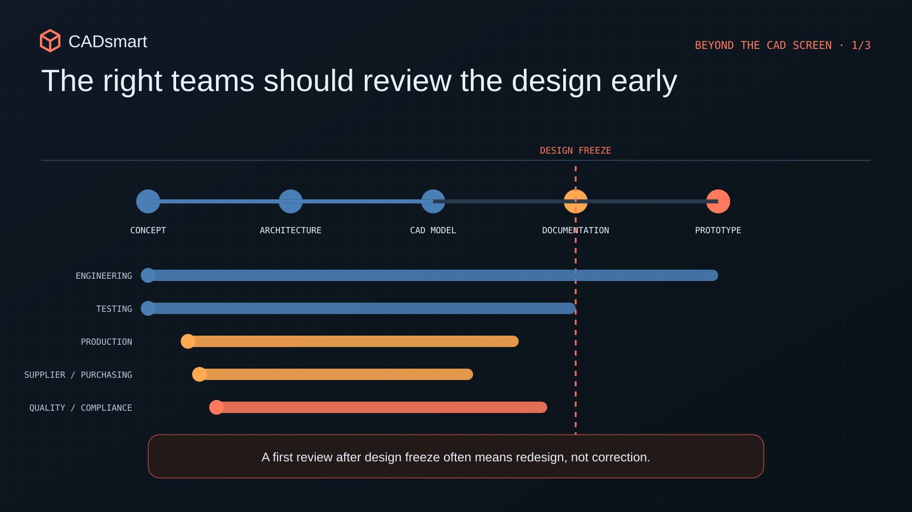

The most expensive mistakes happen before the first prototype
How to clarify requirements, tests, materials and manufacturing realities before a project enters costly prototype iterations.
Before you order the first prototype
Imagine you have been working on a design for several weeks. The model looks solid. The mechanism moves as it should. The render looks the part too. So you order the first prototype, open the package and within five minutes discover that the part is too heavy, assembly requires three hands, and everyone had a slightly different idea of what “easy to use” meant. That is where the trouble starts.
The most expensive mistakes are rarely born at the milling machine or on the assembly bench. They usually appear much earlier, when someone says, “it needs to be light, strong and cheap,” and everyone else nods as though they have just agreed on the same thing. They have not. CAD may be correct. The prototype may look excellent. And the project can still drift apart because the team never agreed on a few basic questions: what exactly are we building, under what conditions should it work, how will we know that it works well, and how do we ultimately want to manufacture it?

Before the expensive work begins, it is worth sorting out four things: requirements, test criteria, material together with manufacturing process, and the involvement of manufacturing and suppliers. This is not about writing documentation as thick as a phone book. It is about knowing what is a decision and what remains only an assumption.
1. “It needs to be light” is not yet a requirement
“Strong”, “easy to assemble”, “as light as possible” and “inexpensive to manufacture” all sound reasonable. The problem is that they are wishes rather than requirements. Take “light” alone. A design engineer may think: reduce mass by 15 percent. A Product Manager: make it cheaper to ship. A user: let me carry the device with one hand. One word, three different products. Until that word is converted into something we can calculate or verify, everyone will be designing a slightly different version of the same thing.

The second problem usually appears later: requirements begin to conflict. The product needs to be light, stiff, inexpensive, weather-resistant and preferably ready yesterday. Fine. Except geometry does not perform magic, material does not read sales presentations, and a supplier will not shorten a process just because the deadline is ambitious. Priorities therefore need to be clear. What is truly critical? Where can we compromise? Which trade-offs are we deliberately accepting?
A good technical brief should give the team concrete answers:
- what function the product must perform and under what conditions;
- which parameters are critical and which are negotiable;
- what manufacturing cost is acceptable and at what production volume;
- what limits apply to mass, size, transport, power supply and environment;
- what “good enough” means for the first version.
One more thing: budget is also a technical requirement. If from the outset we design a part around an expensive process, tight tolerances and a hard-to-source material, the final step will not be a “small cost optimisation”. It will be a second design, only later, more expensive and under greater pressure.
2. First define what “works” means
A prototype is not an oracle. It is simply a question put to reality, sometimes quite an expensive one. Ask a vague question and the answer will be equally vague. The most deceptive word after a test is: “works”. What exactly works? One unit? Once? On a bench, in a warm room, with someone who knows all its quirks? That may still be a useful result, but you need to know what it actually means.

That is why acceptance criteria are defined before the test, not after it. Before building anything, we should know:
- Does the solution perform its function at all?
- Does it do so across the required range and under the required conditions?
- Is the result repeatable enough to move forward?
This immediately brings order to how the prototype is built. If we are checking load capacity and stiffness, we do not need a production-like surface finish yet. If we are evaluating assembly, we must reproduce the interfaces, tool access and sequence of operations. If we are comparing two variants, both must be tested using the same method and under the same conditions. Otherwise, we are comparing apples with a 13 mm spanner.
On various projects I have prepared test protocols, reports, acceptance criteria and test fixtures. The document itself was never the greatest source of value. Paper will not save anyone if nobody knows why the test is being run. The value came from agreeing before the trial what we wanted to learn and what decision would follow the result. At that point, the test stops being an event in the schedule. It becomes a decision-making tool.
3. Material never comes alone. It brings the entire process with it
Material is often selected from a table: strength, stiffness, density, operating temperature. These obviously matter. But the material alone does not settle the issue. Along with it, we choose the manufacturing method, tolerances, joining method, finish, quality control, suppliers and a substantial share of the cost. In short, the material arrives with plenty of baggage. The same function may be delivered by a machined part, bent sheet metal, a casting, a weldment or a polymer component. Each process prefers different geometry and comes with different constraints. A milling machine may happily produce a prototype that verifies the function perfectly. But geometry suited to machining may make little sense as a casting or injection-moulded part.

This is where it is easy to fall into a trap: the prototype works, everyone is pleased, and several months later someone asks how it is actually going to be manufactured at the target cost and volume. Suddenly it becomes clear that the successful prototype merely postponed the redesign. While working on systems combining injection-moulded plastics, sheet metal, castings and machined parts, I repeatedly saw one material decision ripple through the entire product. It changes supports, joints, cable routing, assembly sequence, component availability and the test plan.
Material selection should therefore be viewed more broadly:
- what function the part performs and what loads it carries;
- the target manufacturing process and volume;
- which tolerances can realistically be maintained;
- whether the material and suppliers are available;
- how the part will be joined to the rest of the product;
- how it will be finished, protected and serviced;
- what the complete solution costs, not just a kilogram of material.
The raw-material price can look beautiful in a spreadsheet. Less so once tooling, additional processing, special fixtures and previously overlooked inspection are added.
4. Manufacturing is not a final review board
A common scenario goes like this: the design is almost finished, so we send the drawings to a supplier and ask for a price. Only then do we learn that the tool cannot reach, the bend radius is too small, the part is difficult to fixture, and the tolerance costs more than the rest of the component. This does not mean that the supplier should design the product for the team. It means confronting the idea with the real process earlier. A short consultation can uncover problems with tooling, datums, inspection, lead time or material availability before the geometry is treated as sacred.
Assembly is much the same. On screen, everything has infinite space. In the workshop, the spanner suddenly does not fit, the cable cannot be routed, and the final screw can only be tightened through sheer willpower.

The sooner manufacturing, suppliers, purchasing and quality see the key assumptions, the less it costs to change direction. Early on, we move a line in CAD. Later, we change documentation, orders, tooling and schedules. The same applies to safety and regulatory compliance. If a product has requirements concerning guards, service access, stability, temperature, noise or behaviour during a failure, these are not decorations to add just before launch. They can change the product architecture.
A good design review should therefore not consist of the designer showing a finished model while everyone else says, “looks nice”. It is worth bringing together early the people who view the product from different angles: design, testing, manufacturing, purchasing, quality and service. Each sees a different risk. That is precisely the point.
A prototype should test hypotheses, not clean up chaos
We cannot remove all uncertainty before the first prototype. And that is a good thing, the reason we build prototypes is to learn something. Iteration is not failure. It is part of product development.
The difference is simply this: we can iterate deliberately around a specific hypothesis, or use successive prototypes to discover what we actually intended to build.
Before modelling begins and parts are ordered, five things are worth confirming:
- critical requirements are measurable and their owners are known;
- priorities and trade-offs are explicit;
- the team knows what will be tested and how the result will be judged;
- material has been considered together with process, volume and supply;
- manufacturing, suppliers and safety requirements entered the conversation early enough.
Once these points are in order, the first prototype does not need to be beautiful or perfect. It needs to give the team the information required to make the next good decision. No more, and no less.
Are you developing a mechanical product and want to check whether its assumptions are ready to move into design or prototyping? I can help review requirements, the test plan, mechanical architecture and manufacturing risks before costly iterations begin consuming the budget and schedule.
Review your project
Would you like to apply the article's conclusions to your own project?
Open 9 review questions
- Has every critical function been assigned a measurable parameter, an acceptable range and the conditions under which it must be achieved?
- Have the requirements been prioritised, and is it clear what may be traded off when mass, cost, schedule or durability conflict?
- Do the cost assumptions reflect the planned volume and include tooling, assembly, inspection, scrap and finishing rather than only part prices?
- Which specific hypothesis will the prototype test, and what decision will follow a positive, negative or inconclusive result?
- Does the test plan define the prototype configuration, test conditions, measured values, measurement accuracy and an unambiguous pass criterion?
- Are the geometry, tolerances, joints and inspection method achievable and economically justified for the selected manufacturing process?
- Have the extreme tolerance combinations and their effect on assembly, clearance, preload and product function been analysed?
- Can the product be assembled, inspected and serviced with real tools, in the planned sequence and without knowledge available only to the designer?
- Have manufacturing, quality, purchasing and key suppliers reviewed the design, and do availability, schedule, safety and compliance risks have owners and follow-up actions?
Would you like to save these questions for later?